[Image: Debian Vader, courtesy jschild].
Debian GNU/Linux is an operating system created by volunteers of one of the largest and longest-running free software projects in the world. More than a hundred other Linux distributions like Ubuntu build their distributions on solid Debian awesomesauce.
There are 3 release branches - stable, testing, and unstable - and the current stable branch is wheezy. I use Debian's minimal install image to create a lightweight, console-only base configuration that can be customized for various tasks and desktops.
Below is a visual walk-through of a sample Debian setup that makes use of an entire storage device divided into 3 partitions: an unencrypted root and LUKS encrypted home + swap.
0. Installer
Download a 64bit (32bit for older machines) Debian mini.iso and burn the image to a CD or prepare a USB boot device.
Step 1 - Go!


 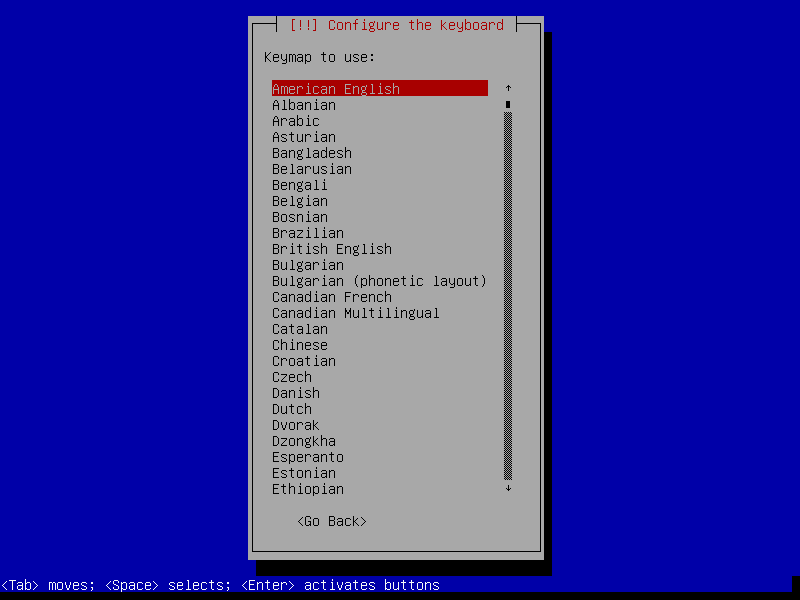
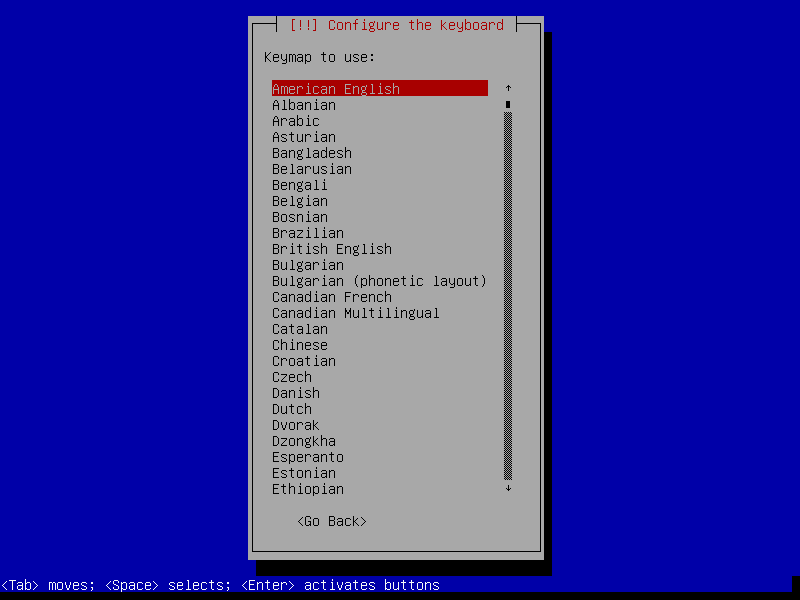


 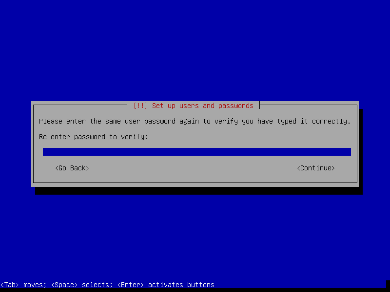
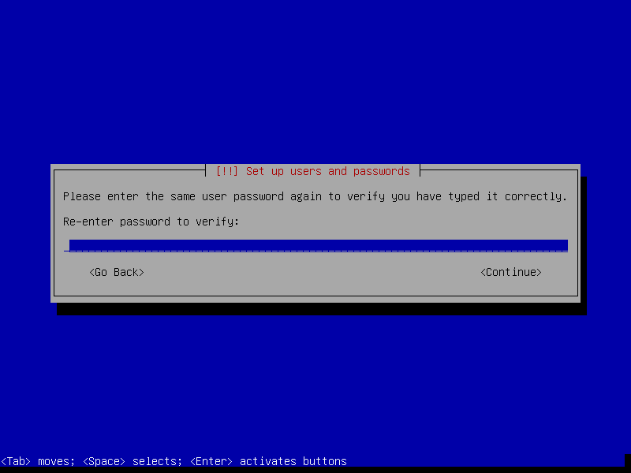

Step 2 - Partitions
In the example below I create 3 partitions on the disk:
- sda1 is a 20GB root partition
- sda5 is a 1GB LUKS encrypted swap partition using a random key
- sda6 uses the remaining space as a LUKS encrypted home partition using a passphrase


Setting Mount options to noatime decreases write operations and boosts drive speed.


 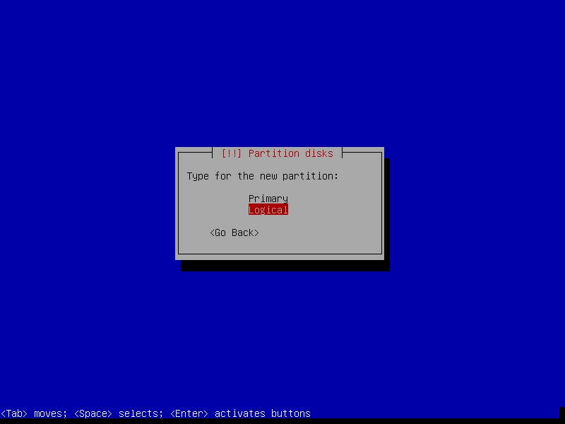
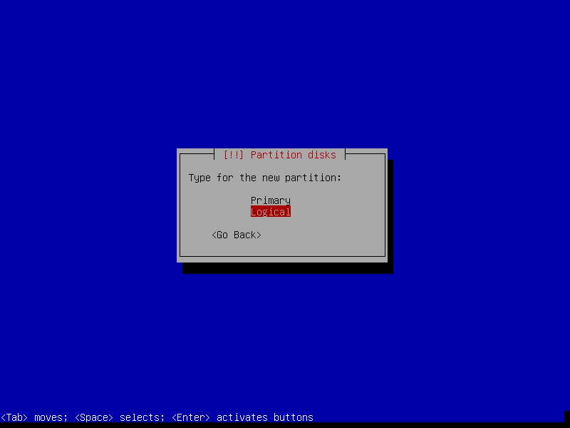


If the hard disk has not been securely wiped prior to installing Debian (using a utility like DBAN) you may want to configure Erase data as yes. Note, however, that depending on the size of the disk this operation can last several hours.


 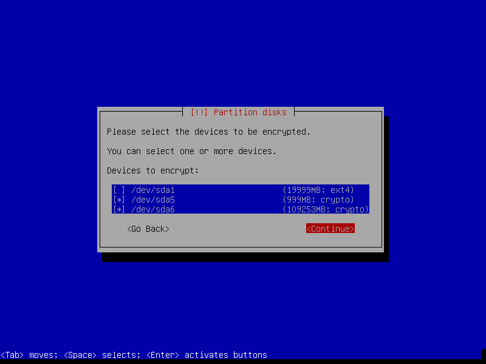
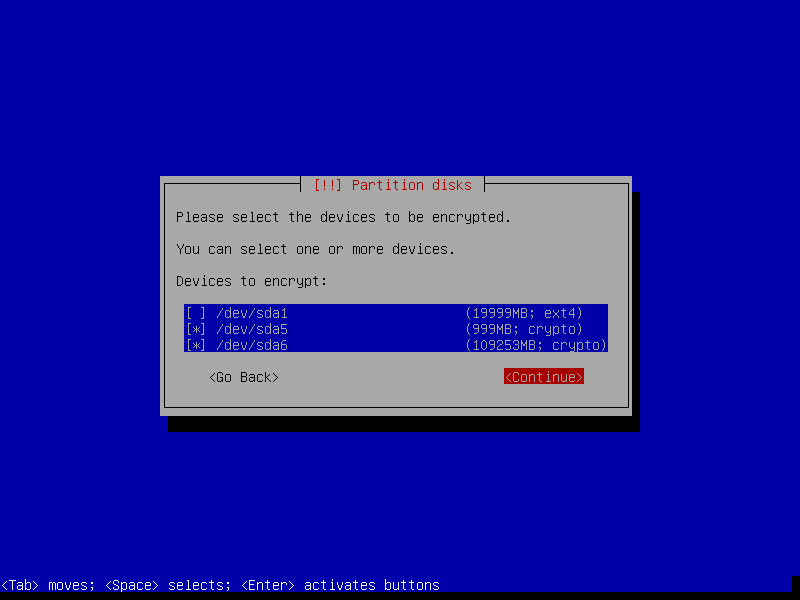


Reserved blocks can be used by privileged system processes to write to disk - useful if a full filesystem blocks users from writing - and reduce disk fragmentation. On large, non-root partitions extra space can be gained by reducing the 5% reserve set aside by Debian to 1%.

 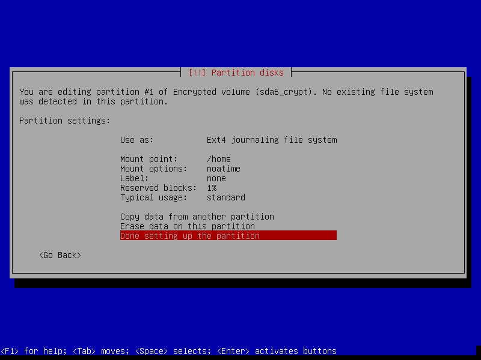
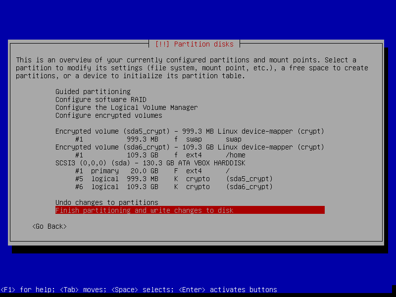
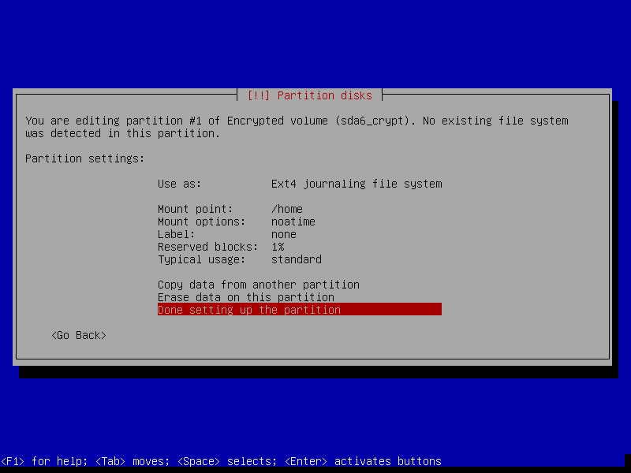
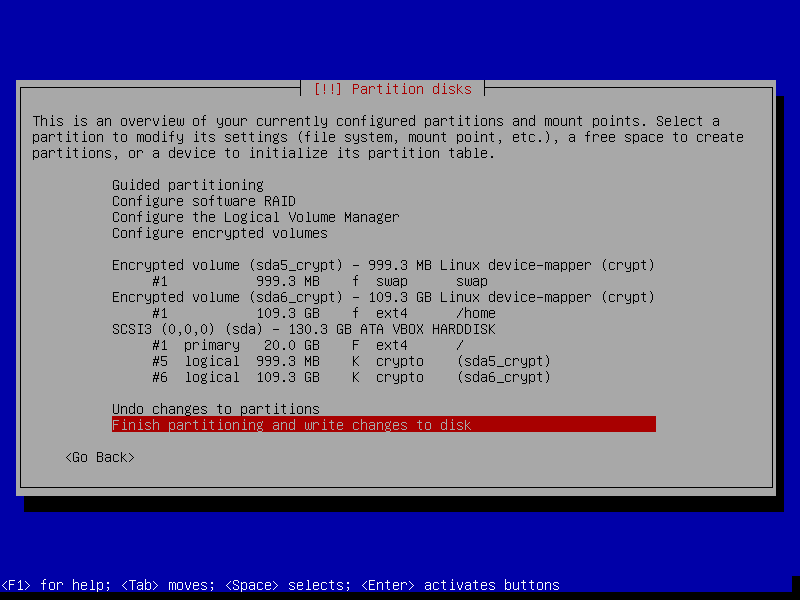

Step 3 - Install packages and finish up

Select only [*] Standard system utilities if you wish to start with a minimal, console-only base configuration ready for further customization. The task menu can be accessed post-install by running tasksel.

 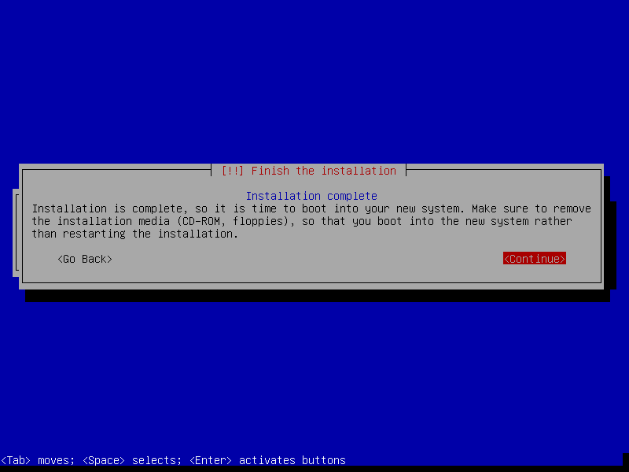
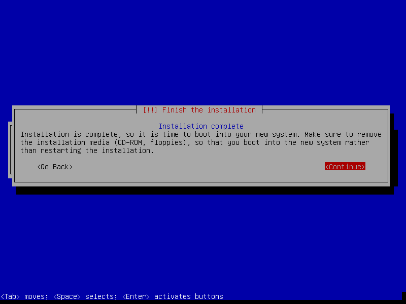

If an encrypted home partition was created in Step 2 the system will display a passphrase prompt to unlock the partition.

I have created a post-install shell script that can be used to configure tracking of Debian's stable, testing, or unstable branch.
Happy hacking!